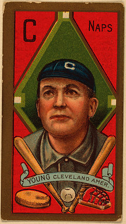

Major League Baseball (MLB) is an American professional baseball organization and the oldest of the major professional sports leagues in the United States and Canada. A total of 30 teams play in Major League Baseball: 15 teams in the National League (NL) and 15 in the American League (AL). The NL and AL were formed in 1876 and 1901. In 1903, the two leagues cooperated but remained legally separate entities until 2000 when they merged into a single organization led by the Commissioner of Baseball. The league is headquartered in Midtown Manhattan.
The NL and AL were formed in 1876 and 1901. In 1903, the two leagues cooperated but remained legally separate entities until 2000 when they merged into a single organization led by a Commissioner.
Baseball's first openly all-professional team was the Cincinnati Red Stockings, who were founded in 1869. Before that, some teams had secretly paid some players. The first few decades of professional baseball were characterized by rivalries between leagues and by players who often jumped from one team or league to another. The period before 1920 is known as the dead-ball era, during which players would rarely hit home runs. Professional baseball in the United States survived a conspiracy to fix the 1919 World Series, which came to be known as the Black Sox Scandal. The sport rose in popularity in the 1920s and survived potential downturns during the Great Depression and World War II. Shortly after the war, Jackie Robinson broke baseball's color barrier.

The period between 1900 and 1919 is commonly referred to as the "dead-ball era". Games of this era tended to be low-scoring and were often dominated by pitchers, such as Walter Johnson, Cy Young, Christy Mathewson, Mordecai Brown, and Grover Cleveland Alexander. The term also accurately describes the condition of the baseball itself. The baseball used American rather than the modern Australian wool yarn and was not wound as tightly, affecting the distance that it would travel. More significantly, balls were kept in play until they were mangled, soft and sometimes lopsided. During this era, a baseball cost three dollars, equal to $44.24 today (in inflation-adjusted U.S. dollars), and owners were reluctant to purchase new balls. Fans were expected to throw back fouls and (rare) home runs. Baseballs also became stained with tobacco juice, grass, and mud, and sometimes the juice of licorice, which some players would chew for the purpose of discoloring the ball.
Also, pitchers could manipulate the ball through the use of the spitball. (In 1921 use of this pitch was restricted to a few pitchers with a grandfather clause). Additionally, many ballparks had large dimensions, such as the West Side Grounds of the Chicago Cubs, which was 560 feet (170 m) to the center field fence, and the Huntington Avenue Grounds of the Boston Red Sox, which was 635 feet (194 m) to the center field fence, thus home runs were rare, and "small ball" tactics such as singles, bunts, stolen bases, and the hit-and-run play dominated the strategies of the time. Hitting methods like the Baltimore Chop were used to increase the number of infield singles. On a successful Baltimore chop, the batter hits the ball forcefully into the ground, causing it to bounce so high that the batter reaches first base before the ball can be fielded and thrown to the first baseman.
The adoption of the foul strike rule in the early twentieth century quickly sent baseball from a high-scoring game to one where scoring runs became a struggle. Prior to the institution of this rule, foul balls were not counted as strikes: a batter could foul off any number of pitches with no strikes counted against him; this gave an enormous advantage to the batter. In 1901, the NL adopted the foul strike rule, and the AL followed suit in 1903.
After the 1919 World Series between the Chicago White Sox and Cincinnati Reds, baseball was rocked by allegations of a game fixing scheme known as the Black Sox Scandal. Eight players—Joe Jackson, Eddie Cicotte, Claude "Lefty" Williams, George "Buck" Weaver, Arnold "Chick" Gandil, Fred McMullin, Charles "Swede" Risberg, and Oscar "Happy" Felsch—intentionally lost the World Series in exchange for a ring worth $100,000 ($1,064,705.88 in 2016 dollars). Despite being acquitted, all were permanently banned from Major League Baseball.
Baseball's popularity increased in the 1920s and 1930s. The 1920 season was notable for the death of Ray Chapman of the Cleveland Indians. Chapman, who was struck in the head by a pitch and died a few hours later, became the only MLB player to die of an on-field injury, a tragedy which led directly to both leagues requiring the placing into play new, white baseballs whenever a ball became scuffed or dirty, helping bring the "dead-ball" era to an end. The following year, the New York Yankees made their first World Series appearance. By the end of the 1930s, the team had appeared in 11 World Series, winning eight of them. Yankees slugger Babe Ruth had set the single-season home run record in 1927, hitting 60 home runs; a few years earlier, Ruth had set the same record with 29 home runs.
Affected by the difficulties of the Great Depression, baseball's popularity had begun a downward turn in the early 1930s. By 1932, only two MLB teams turned a profit. Attendance had fallen, due at least in part to a 10% federal amusement tax added to baseball ticket prices. Baseball owners cut their rosters from 25 men to 23 men, and even the best players took pay cuts. Team executives were innovative in their attempts to survive, creating night games, broadcasting games live by radio and rolling out promotions such as free admission for women. Throughout the period of the Great Depression, no MLB teams moved or folded.
The onset of World War II created a significant shortage of professional baseball players, as more than 500 men left MLB teams to serve in the military. Many of them played on service baseball teams that entertained military personnel in the US or in the Pacific. MLB teams of this time largely consisted of young men, older players, and those with a military classification of 4F, indicating mental, physical, or moral unsuitability for service. Men like Pete Gray, a one-armed outfielder, got the chance to advance to the major leagues. However, MLB rosters did not include any black players through the end of the war. Black players, many of whom served in the war, were still restricted to playing Negro league baseball.
Wartime blackout restrictions, designed to keep outdoor lighting at low levels, caused another problem for baseball. These rules limited traveling and night games to the point that the 1942 season nearly had to be canceled. On January 14, 1942, MLB Commissioner Kenesaw Mountain Landis wrote a letter to U.S. President Franklin D. Roosevelt and pleaded for the continuation of baseball during the war in hopes for a start of a new major league season. President Roosevelt responded, "I honestly feel that it would be best for the country to keep baseball going. There will be fewer people unemployed and everybody will work longer hours and harder than ever before. And that means that they ought to have a chance for recreation and for taking their minds off their work even more than before."
With the approval of President Roosevelt, spring training began in 1942 with few repercussions. The war interrupted the careers of stars including Stan Musial, Bob Feller, Ted Williams, and Joe DiMaggio, but baseball clubs continued to field their teams.
Branch Rickey, president and general manager of the Brooklyn Dodgers, began making efforts to introduce a black baseball player to the previously all-white professional baseball leagues in the mid-1940s. He selected Jackie Robinson from a list of promising Negro league players. After obtaining a commitment from Robinson to "turn the other cheek" to any racial antagonism directed at him, Rickey agreed to sign him to a contract for $600 a month. In what was later referred to as "The Noble Experiment", Robinson was the first black baseball player in the International League since the 1880s, joining the Dodgers' farm club, the Montreal Royals, for the 1946 season.
The following year, the Dodgers called up Robinson to the major leagues. On April 15, 1947, Robinson made his major league debut at Ebbets Field before a crowd of 26,623 spectators, including more than 14,000 black patrons. Black baseball fans began flocking to see the Dodgers when they came to town, abandoning the Negro league teams that they had followed exclusively. Robinson's promotion met a generally positive, although mixed, reception among newspaper writers and white major league players. Manager Leo Durocher informed his team, "I do not care if the guy is yellow or black, or if he has stripes like a fuckin' zebra. I'm the manager of this team, and I say he plays. What's more, I say he can make us all rich. And if any of you cannot use the money, I will see that you are all traded."
After a strike threat by some players, NL President Ford Frick and Baseball Commissioner Happy Chandler let it be known that any striking players would be suspended. Robinson received significant encouragement from several major-league players, including Dodgers teammate Pee Wee Reese who said, "You can hate a man for many reasons. Color is not one of them." That year, Robinson won the inaugural Major League Baseball Rookie of the Year Award (separate NL and AL Rookie of the Year honors were not awarded until 1949).
Less than three months later, Larry Doby became the first African-American to break the color barrier in the American League with the Cleveland Indians. The next year, a number of other black players entered the major leagues. Satchel Paige was signed by the Indians and the Dodgers added star catcher Roy Campanella and Don Newcombe, who was later the first winner of the Cy Young Award for his outstanding pitching.